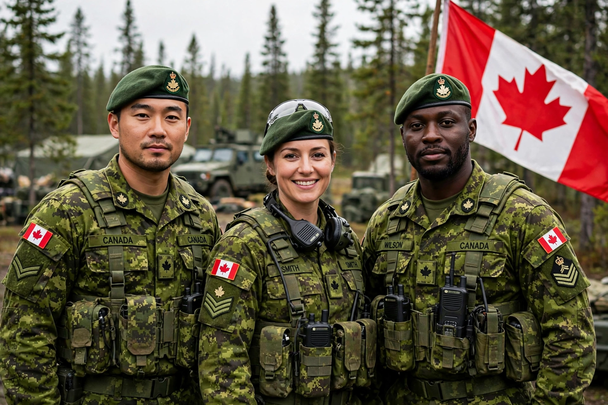

The Canadian Armed Forces (CAF; French: Forces armées canadiennes) are the unified military forces of Canada, comprising the Royal Canadian Navy, Canadian Army and Royal Canadian Air Force, under the Department of National Defence.
| Canadian Armed Forces | |
|---|---|
 | |
| Founded | 1 February 1968 (unification) |
| Commander-in-chief | Governor General on behalf of the King |
| Headquarters | Ottawa, Ontario |
| Active personnel | c. 62,000–68,000 Regular Force |
Canadian forces fought in the Boer War, both World Wars — including Vimy Ridge, the Battle of the Atlantic and Juno Beach on D-Day — the Korean War, peacekeeping missions, the Gulf War and Afghanistan. The three services were unified into a single service in 1968, a pioneering and controversial reform; historic service identities were later partly restored.
The CAF defend Canada, contribute to North American defence with the United States through NORAD, and support NATO and international operations. The Chief of the Defence Staff is the professional head; the Minister of National Defence has ministerial responsibility.
Recreated from memory.